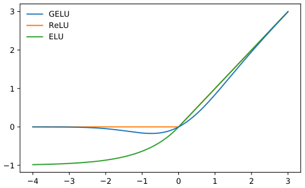
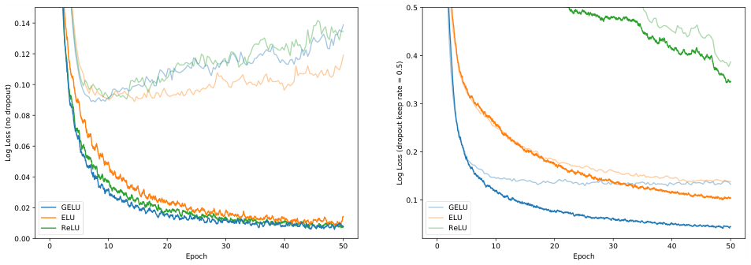
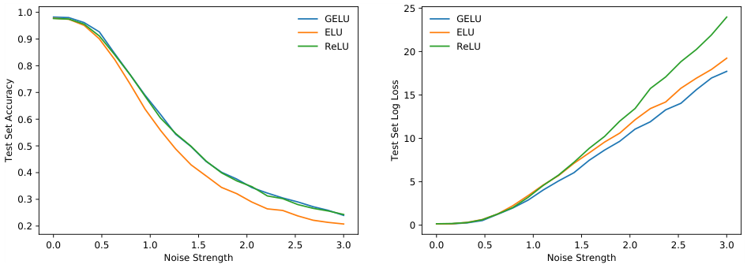
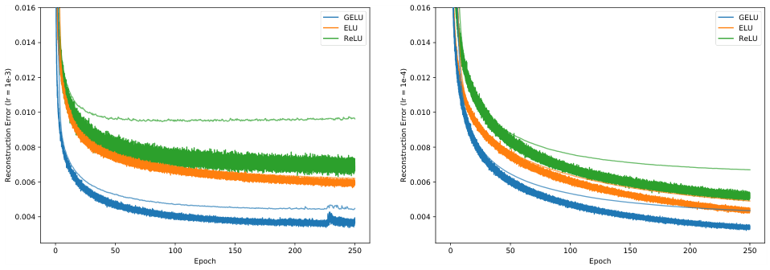
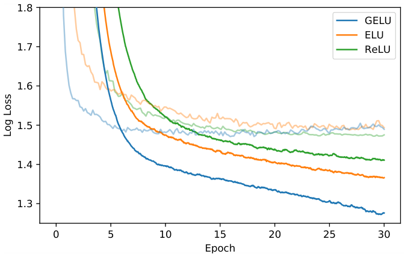
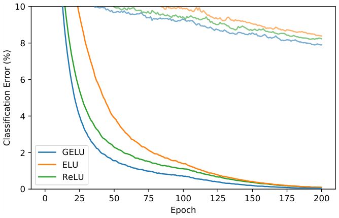
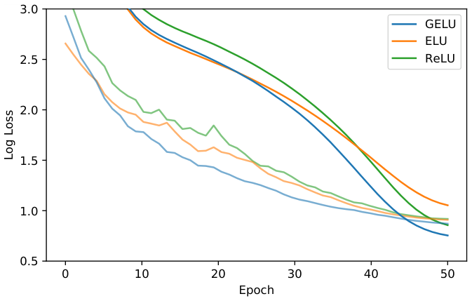

我们提出高斯误差线性单元（Gaussian Error Linear Unit，GELU），一种高性能神经网络激活函数。GELU 激活函数为 \(x\Phi(x)\)，其中 \(\Phi(x)\) 是标准高斯累积分布函数。与 ReLU（\(x\mathbf{1}_{x>0}\)）按输入符号进行门控不同，GELU 非线性按输入的值对输入进行加权。我们对 GELU 非线性与 ReLU、ELU 激活进行了实证评估，发现在所有考虑的计算机视觉、自然语言处理和语音任务上都取得了性能提升。
早期人工神经元使用二值阈值单元（Hopfield, 1982; McCulloch & Pitts, 1943）。这些硬二值决策通过 sigmoid 激活被平滑，使神经元具有“发放率”解释，并能够用反向传播训练。但随着网络变深，使用 sigmoid 激活训练被证明不如非平滑、概率性更弱的 ReLU（Nair & Hinton, 2010）有效，后者基于输入符号做出硬门控决策。尽管统计动机较弱，ReLU 仍是一种有竞争力的工程解决方案，通常比 sigmoid 实现更快、更好的收敛。在 ReLU 成功的基础上，最近一种称为 ELU（Clevert et al., 2016）的修改允许类 ReLU 非线性输出负值，有时能提高训练速度。总之，激活选择仍然是神经网络必要的架构决策，否则网络将只是深度线性分类器。
深度非线性分类器可以很好地拟合数据，以至于网络设计者经常面临选择：是否加入随机正则化器，例如向隐藏层添加噪声或应用 dropout（Srivastava et al., 2014），而这一选择与激活函数保持分离。一些随机正则化器可以使网络表现得像网络集成，即伪集成（pseudoensemble，Bachman et al., 2014），并可能带来显著的准确率提升。例如，随机正则化器 dropout 通过零乘法随机改变一些激活决策，从而创建伪集成。因此，非线性与 dropout 共同决定神经元的输出，但这两项创新一直彼此独立。此外，二者都没有包含另一方，因为流行的随机正则化器与输入无关，而非线性会受益于这类正则化器。
在这项工作中，我们引入一种新的非线性：高斯误差线性单元（GELU）。它与随机正则化器相关：它是 Adaptive Dropout（Ba & Frey, 2013）某种修改的期望。这提示了一种更具概率性的神经元输出视角。我们发现，这种新非线性在计算机视觉、自然语言处理和自动语音识别任务上匹配或超过使用 ReLU 或 ELU 的模型。
我们通过结合 dropout、zoneout 和 ReLU 的性质来启发我们的激活函数。首先注意，ReLU 和 dropout 都产生神经元输出：ReLU 确定性地将输入乘以 0 或 1，而 dropout 随机地乘以 0。此外，一种新的 RNN 正则化器 zoneout 随机地将输入乘以 1（Krueger et al., 2016）。我们将这种功能合并：将输入乘以 0 或 1，但这个 0-1 掩码的值是随机确定的，同时也依赖于输入。具体来说，我们可以将神经元输入 \(x\) 乘以 \(m \sim \mathrm{Bernoulli}(\Phi(x))\)，其中 \(\Phi(x)=P(X\le x)\)，\(X\sim\mathcal{N}(0,1)\) 是标准正态分布的累积分布函数。我们选择该分布，是因为神经元输入倾向于服从正态分布，尤其是在使用批归一化时。在此设置下，随着 \(x\) 减小，输入被“丢弃”的概率更高，因此施加于 \(x\) 的变换是随机的，但依赖于输入。以这种方式掩蔽输入保留了非确定性，同时保持对输入值的依赖。随机选择的掩码相当于对输入进行随机零变换或恒等变换。这很像 Adaptive Dropout（Ba & Frey, 2013），但 adaptive dropout 与非线性配合使用，并使用 logistic 分布而不是标准正态分布。我们发现，仅使用这种随机正则化器、完全不使用任何非线性，也可以训练出有竞争力的 MNIST 和 TIMIT 网络。

我们通常希望神经网络给出确定性决策，这引出了我们的新非线性。该非线性是随机正则化器对输入 \(x\) 的期望变换，即 \(\Phi(x)\times Ix+(1-\Phi(x))\times 0x=x\Phi(x)\)。粗略地说，这个表达式表示：我们按 \(x\) 比其他输入大多少来缩放 \(x\)。由于高斯累积分布函数通常用误差函数计算，我们定义高斯误差线性单元（GELU）为
如果更高的前馈速度值得牺牲精确性，我们可以用以下形式近似 GELU：
或
我们也可以使用不同的 CDF。例如，可以使用 Logistic 分布 CDF \(\sigma(x)\)，得到我们称为 Sigmoid 线性单元（SiLU）的 \(\sigma(x)\)。我们也可以使用 \(\mathcal{N}(\mu,\sigma^2)\) 的 CDF，并让 \(\mu\) 和 \(\sigma\) 成为可学习超参数，但在本文中我们简单地令 \(\mu=0,\sigma=1\)。因此，我们在以下实验中不引入任何新超参数。下一节中，我们将展示 GELU 在大量任务上超过 ReLU 和 ELU。
我们在 MNIST 分类（灰度图像，10 类，6 万训练样本和 1 万测试样本）、MNIST 自编码、Tweet 词性标注（1000 训练、327 验证、500 测试推文）、TIMIT 帧识别（3696 训练、1152 验证、192 测试音频句子）以及 CIFAR-10/100 分类（彩色图像，10/100 类，5 万训练和 1 万测试样本）上评估 GELU、ELU 和 ReLU。由于 LReLU 与 ReLU 相似，我们不评估 LReLU 等非线性（LReLU 的描述见 Maas et al., 2013）。
让我们通过复现 Clevert et al. (2016) 的一个实验，验证这种非线性是否能与先前的激活函数竞争。为此，我们训练一个全连接神经网络，分别使用 GELU（\(\mu=0,\sigma=1\)）、ReLU 和 ELU（\(\alpha=1\)）。每个 8 层、128 个神经元的神经网络以批量大小 128 训练 50 个 epoch。该实验与 Clevert 等人的不同之处在于，我们使用 Adam 优化器（Kingma & Ba, 2015），而不是无动量随机梯度下降；我们还展示了非线性应对 dropout 的能力。权重用单位范数行初始化，因为这对每种非线性的性能都有积极影响（Hendrycks & Gimpel, 2016; Mishkin & Matas, 2016; Saxe et al., 2014）。注意，我们使用训练集中的 5k 验证样本在学习率 \(\{10^{-3},10^{-4},10^{-5}\}\) 上调参，并取五次运行的中位数结果。使用这些分类器，我们在图 3 中证明使用 GELU 的分类器对噪声输入更稳健。图 2 显示，无论是否使用 dropout，GELU 往往具有最低的中位训练对数损失。因此，尽管 GELU 受不同随机过程启发，它与 dropout 配合良好。


我们现在考虑自监督设置，在 MNIST 上训练深度自编码器（Desjardins et al., 2015）。为此，我们使用层宽依次为 1000、500、250、30、250、500、1000 的网络。我们再次使用 Adam 优化器和批量大小 64。损失为均方损失。学习率从 \(10^{-3}\) 到 \(10^{-4}\) 变化。我们也尝试了 0.01 的学习率，但 ELU 发散，GELU 和 ReLU 收敛很差。图 4 的结果表明 GELU 适应不同学习率，并显著优于其他非线性。

自然语言处理中的许多数据集相对较小，因此激活函数能否从少量样本中很好地泛化很重要。为应对这一挑战，我们在带 POS 标注的推文上比较非线性（Gimpel et al., 2011; Owoputi et al., 2013），其中包含 25 个标签。推文标注器只是一个两层网络，使用在 5600 万条推文语料上预训练的词向量（Owoputi et al., 2013）。输入是待标注词及其左右相邻词向量的拼接。每层有 256 个神经元，dropout 保留概率为 0.8，网络用 Adam 优化，并在学习率 \(\{10^{-3},10^{-4},10^{-5}\}\) 上调参。我们对每个学习率训练每个网络五次，中位测试集错误率为：GELU 12.57%，ReLU 12.67%，ELU 12.91%。
我们的下一个挑战是使用 TIMIT 数据集进行音素识别，该数据集包含 680 名说话人在无噪声环境中的录音。系统是五层、2048 个神经元宽的分类器，如 Mohamed et al. (2012)，有 39 个输出音素标签，dropout 率为 0.5，如 Srivastava (2013)。该网络以 11 帧为输入，必须使用每帧 26 个 MFCC、能量和导数特征预测中心帧的音素。我们在学习率 \(\{10^{-3},10^{-4},10^{-5}\}\) 上调参，并用 Adam 优化。每种设置运行五次后，我们得到图 5 的中位曲线；在最低验证误差处选择的中位测试误差为：GELU 29.3%，ReLU 29.5%，ELU 29.6%。

接下来，我们证明对于更复杂的架构，GELU 非线性再次优于其他非线性。我们分别在浅层和深层卷积神经网络上使用 CIFAR-10 和 CIFAR-100 数据集（Krizhevsky, 2009）评估该激活函数。
我们的较浅卷积神经网络是一个 9 层网络，架构和训练过程来自 Salimans & Kingma (2016)，同时使用批归一化加速训练。架构见附录 A，最近在无数据增强的 CIFAR-10 上取得了最先进结果。训练该网络未使用数据增强。我们使用 5k 验证样本在学习初始率 \(\{10^{-3},10^{-4},10^{-5}\}\) 上调参，然后根据交叉验证得到的学习率在整个训练集上重新训练。网络用 Adam 优化 200 个 epoch，在第 100 个 epoch 学习率线性衰减到零。结果见图 6，每条曲线是三次运行的中位数。最终，GELU 获得中位错误率 7.89%，ReLU 为 8.16%，ELU 为 8.41%。
接下来，我们考虑在 CIFAR-100 上使用 40 层、加宽因子为 4 的宽残差网络（Zagoruyko & Komodakis, 2016）。我们使用 Loshchilov & Hutter (2016) 描述的学习率计划（\(T_0=50,\eta=0.1\)）和 Nesterov 动量训练 50 个 epoch，dropout 保留概率为 0.7。有人指出 ELU 在残差网络中会出现梯度爆炸（Shah et al., 2016），通过在残差块末尾使用批归一化可以缓解。因此，我们使用 Conv-Activation-Conv-Activation-BatchNorm 块架构，以对 ELU 更公平。三次运行后，我们得到图 7 的中位收敛曲线。同时，GELU 达到中位错误率 20.74%，ReLU 为 21.77%（不使用上述我们的修改时，原始 40-4 WideResNet 使用 ReLU 为 22.89%（Zagoruyko & Komodakis, 2016）），ELU 为 22.98%。


在多个实验中，GELU 都优于先前的非线性，但在其他方面它与 ReLU 和 ELU 有相似之处。例如，当 \(\sigma\to0\) 且 \(\mu=0\) 时，GELU 变成 ReLU。此外，ReLU 和 GELU 在渐近意义上相等。事实上，GELU 可以看作平滑 ReLU 的一种方式。为看到这一点，回想 \(\mathrm{ReLU}=\max(x,0)=x\mathbb{1}(x>0)\)（其中 \(\mathbb{1}\) 是指示函数），而 GELU 在 \(\mu=0,\sigma=1\) 时为 \(x\Phi(x)\)。于是 CDF 是 ReLU 所用二值函数的平滑近似，就像 sigmoid 平滑二值阈值激活一样。与 ReLU 不同，GELU 和 ELU 可以同时为负和为正。事实上，如果我们使用标准 Cauchy 分布的累积分布函数，那么 ELU（当 \(\alpha=1/\pi\) 时）在负值上渐近等于 \(xP(C\le x), C\sim\mathrm{Cauchy}(0,1)\)，在正值上若将直线下移 \(1/\pi\) 则为 \(xP(C\le x)\)。这些是与先前非线性的一些基本关系。
然而，GELU 有几个显著差异。这个非凸、非单调函数在正域不是线性的，并且在所有点都表现出曲率。而 ReLU 和 ELU 是凸且单调的激活，在正域是线性的，因此可能缺乏曲率。因此，增加的曲率和非单调性可能使 GELU 比 ReLU 或 ELU 更容易逼近复杂函数。此外，由于 \(\mathrm{ReLU}(x)=x\mathbb{1}(x>0)\)，而 \(\mathrm{GELU}(x)=x\Phi(x)\)（\(\mu=0,\sigma=1\)），我们可以看到 ReLU 根据输入符号对输入进行门控，而 GELU 根据输入比其他输入大多少对输入进行加权。此外且重要的是，GELU 具有概率解释，因为它是随机正则化器的期望。
对于使用 GELU，我们还有两条实用建议。首先，我们建议在使用 GELU 训练时使用带动量的优化器，这是深度神经网络的标准做法。其次，使用高斯分布累积分布函数的紧密近似很重要。sigmoid 函数 \(\sigma(x)=1/(1+e^{-x})\) 是正态分布累积分布函数的一种近似。然而，我们发现 Sigmoid 线性单元（SiLU）\(x\sigma(x)\) 表现不如 GELU，但通常优于 ReLU 和 ELU，因此我们的 SiLU 也是合理的非线性选择。我们没有使用 \(x\sigma(x)\) 近似 \(\Phi(x)\)，而是使用 \(0.5x(1+\tanh[\sqrt{2/\pi}(x+0.044715x^3)])\)（Choudhury, 2014）或 \(x\sigma(1.702x)\)。二者都是足够快、易于实现的近似，本文每个实验都使用前者。
对于本文评估的众多数据集，GELU 一致超过 ELU 和 ReLU 的准确率，使其成为先前非线性的可行替代方案。
我们感谢 NVIDIA Corporation 捐赠本研究中使用的若干 TITAN X GPU。
Jimmy Ba and Brendan Frey. Adaptive dropout for training deep neural networks. In Neural Information Processing Systems, 2013.
Philip Bachman, Ouais Alsharif, and Doina Precup. Learning with pseudo-ensembles. In Neural Information Processing Systems, 2014.
Amit Choudhury. A simple approximation to the area under standard normal curve. In Mathematics and Statistics, 2014.
Djork-Arné Clevert, Thomas Unterthiner, and Sepp Hochreiter. Fast and accurate deep network learning by exponential linear units (ELUs). In International Conference on Learning Representations, 2016.
Guillaume Desjardins, Karen Simonyan, Razvan Pascanu, and Koray Kavukcuoglu. Natural neural networks. In arXiv, 2015.
Kevin Gimpel, Nathan Schneider, Brendan O’Connor, Dipanjan Das, Daniel Mills, Jacob Eisenstein, Michael Heilman, Dani Yogatama, Jeffrey Flanigan, and Noah A. Smith. Part-of-Speech Tagging for Twitter: Annotation, Features, and Experiments. Association for Computational Linguistics (ACL), 2011.
Dan Hendrycks and Kevin Gimpel. Adjusting for dropout variance in batch normalization and weight initialization. In arXiv, 2016.
John Hopfield. Neural networks and physical systems with emergent collective computational abilities. In Proceedings of the National Academy of Sciences of the USA, 1982.
Diederik Kingma and Jimmy Ba. Adam: A Method for Stochastic Optimization. International Conference for Learning Representations, 2015.
Alex Krizhevsky. Learning Multiple Layers of Features from Tiny Images, 2009.
David Krueger, Tegan Maharaj, János Kramár, Mohammad Pezeshki, Nicolas Ballas, Nan Rosemary Ke, Anirudh Goyal, Yoshua Bengio, Hugo Larochelle, Aaron Courville, and Chris Pal. Zoneout: Regularizing RNNs by randomly preserving hidden activations. In Neural Information Processing Systems, 2016.
Ilya Loshchilov and Frank Hutter. SGDR: Stochastic gradient descent with restarts. arXiv, 2016.
Andrew L. Maas, Awni Y. Hannun, and Andrew Y. Ng. Rectifier nonlinearities improve neural network acoustic models. In International Conference on Machine Learning, 2013.
Warren S. McCulloch and Walter Pitts. A logical calculus of the ideas immanent in nervous activity. In Bulletin of Mathematical Biophysics, 1943.
Dmytro Mishkin and Jiri Matas. All you need is a good init. In International Conference on Learning Representations, 2016.
Abdelrahman Mohamed, George E. Dahl, and Geoffrey E. Hinton. Acoustic modeling using deep belief networks. In IEEE Transactions on Audio, Speech, and Language Processing, 2012.
Vinod Nair and Geoffrey E. Hinton. Rectified linear units improve restricted boltzmann machines. In International Conference on Machine Learning, 2010.
Olutobi Owoputi, Brendan O’Connor, Chris Dyer, Kevin Gimpel, Nathan Schneider, and Noah A. Smith. Improved part-of-speech tagging for online conversational text with word clusters. In North American Chapter of the Association for Computational Linguistics (NAACL), 2013.
Tim Salimans and Diederik P. Kingma. Weight normalization: A simple reparameterization to accelerate training of deep neural networks. In Neural Information Processing Systems, 2016.
Andrew M. Saxe, James L. McClelland, and Surya Ganguli. Exact solutions to the nonlinear dynamics of learning in deep linear neural networks. In International Conference on Learning Representations, 2014.
Anish Shah, Sameer Shinde, Eashan Kadam, Hena Shah, and Sandip Shingade. Deep residual networks with exponential linear unit. In Vision Net, 2016.
Nitish Srivastava. Improving neural networks with dropout. In University of Toronto, 2013.
Nitish Srivastava, Geoffrey E. Hinton, Alex Krizhevsky, Ilya Sutskever, and Ruslan Salakhutdinov. Dropout: A simple way to prevent neural networks from overfitting. In Journal of Machine Learning Research, 2014.
Sergey Zagoruyko and Nikos Komodakis. Wide residual networks. British Machine Vision Conference, 2016.
| 层类型 | # 通道 | x, y 维度 |
|---|---|---|
| 原始 RGB 输入 | 3 | 32 |
| ZCA 白化 | 3 | 32 |
| 高斯噪声 σ = 0.15 | 3 | 32 |
| 3×3 卷积 + 激活 | 96 | 32 |
| 3×3 卷积 + 激活 | 96 | 33 |
| 3×3 卷积 + 激活 | 96 | 32 |
| 2×2 最大池化，stride 2 | 96 | 16 |
| dropout p = 0.5 | 96 | 16 |
| 3×3 卷积 + 激活 | 192 | 16 |
| 3×3 卷积 + 激活 | 192 | 15 |
| 3×3 卷积 + 激活 | 192 | 16 |
| 2×2 最大池化，stride 2 | 192 | 8 |
| dropout p = 0.5 | 192 | 8 |
| 3×3 卷积 + 激活 | 192 | 6 |
| 1×1 卷积 + 激活 | 192 | 6 |
| 1×1 卷积 + 激活 | 192 | 6 |
| 全局平均池化 | 192 | 1 |
| softmax 输出 | 10 | 1 |
本文源于 DH 在 2016 年 6 月作为本科生第一次研究实习时的工作。那一周开始时，本文被放到 arXiv 上，我们讨论了更平滑的 ReLU 激活函数（\(x\times P(X\le x)\)）及其与随机正则化器的关系。2016 年，我们将论文提交给 ICLR，并公开了论文和代码。在论文中，我们引入并创造了 Sigmoid 线性单元（SiLU）这一名称，形式为 \(x\cdot\sigma(x)\)。
2017 年上半年，Elfwing 等人发表了一篇论文，提出了与 SiLU 相同的激活函数 \(x\cdot\sigma(x)\)，他们称之为“SIL”。2017 年底，即本文首次发布一年多后，Quoc Le 和 Google Brain 的其他人发表了一篇论文，提出 \(x\cdot\sigma(x)\)，但没有引用 Elfwing 等人的论文或本工作。得知此事后，我们联系了双方。Elfwing 很快更新了他们的工作，将激活称为“SiLU”而不是“SIL”，以承认我们最初引入了该激活。
与 Elfwing 等人不同，Google Brain 的研究人员继续将该激活称为“swish”。然而，这并没有新颖性。“swish”论文的第一作者公开承认了他们的疏忽，说：“正如有人指出的，我们遗漏了提出相同激活函数的先前工作。错误完全在我，因为我没有进行足够彻底的文献检索。”为了平息批评，一周后发布了论文更新。更新没有为本工作的 SiLU 给予 credit，而只是为 GELU 引用了本工作，以使“swish”显得更有新颖性。在更新后的论文中，引入了一个可学习超参数 \(\beta\)，并将 swish 从 \(x\cdot\sigma(x)\) 改为 \(x\cdot\sigma(\beta\cdot x)\)。这把该想法的全部新颖性押在一个新增的可学习超参数 \(\beta\) 上。
尽管添加了超参数 beta，社区中几乎所有人仍然使用没有 \(\beta\) 的原始“swish”函数（即 \(\beta=1\)）。由于这篇论文来自 Google Brain，TensorFlow 实现最终被称为“swish”，并且默认设置移除了 \(\beta\)，使其与 SiLU 完全相同。添加一个未使用超参数的做法，使得可以在有效获得别处起源想法 credit 的同时声称新颖性。具有相同资深作者的未来论文即使不使用 \(\beta\)，也一直称该函数为“swish”，使其与本工作最初提出的 SiLU 完全相同。这导致“swish”论文不恰当地获得了该想法的 credit。
随着 GELU 开始在 BERT 和 GPT 中使用，并成为最先进 Transformer 的默认激活，情况发生了变化。现在它的使用远比 SiLU 普遍。
另外，一个 Reddit 帖子“Google has a credit assignment problem in research”变得流行，聚焦于他们如何将 SiLU 称为 swish。作为例子，他们提到了“Smooth Adversarial Training”作为 credit assignment 不佳的例子。在来自 swish 资深作者的“Smooth Adversarial Training”论文中，使用了“swish”一词而不是“SiLU”。为减少该帖子的反噬，作者更新了论文，将“swish”替换为“SiLU”，承认本工作是该想法的原始来源。在该帖子之后，TensorFlow 和 PyTorch 等流行库也开始将该函数重命名为“SiLU”而不是“swish”。对于密切观察者而言，该问题已基本解决，我们感谢基本已经实现的适当认可。
说明：本文档为所提供 PDF 内容的中文翻译版；参考文献保留英文原样。原文图已按英文本裁切嵌入。原文部分 OCR 重复或截断处已按上下文整理。